MSS Processing#
Introduction#
The KARIOS tool can be easily integrated into a more complex geometric calibration processing in charge of Landsat MSS L1C product refinement RD-11. This case shows how KARIOS results are used to estimate the deformation model, subsequently used for warping to Sentinel 2 reference image grid. Furthermore, KARIOS is used to check the quality of resulting L1C refined image. An in depth analysis, based on large dataset confirms that the proposed approach is relevant.
The land monitoring community expects consistent and harmonised long-term datasets, in order to derive Essential Climate Variables (ECV). Within this context, in complement to Thematic Mapper (TM) and Enhanced Thematic Mapper (ETM) data, the ESA archive includes also Landsat Multi Spectral Scanner (MSS) data, which represent an outstanding source of historical data RD-1. In the last decades, many efforts spent in the consolidation of this ESA archive, focusing on raw data repatriation, definition of new product type and bulk processing of the full archive (ESA SLAP RD-2, RD-3, RD-4). Nonetheless, in the era of data cube, the MSS data is now requiring challenging algorithm developments to ensure that all threshold requirements, as defined by the CEOS Analysis Ready Data For Land (CARD4L) Surface Reflectance (SR) Product Family Specifications (PFS), (RD-5), are met.
{kind=link}
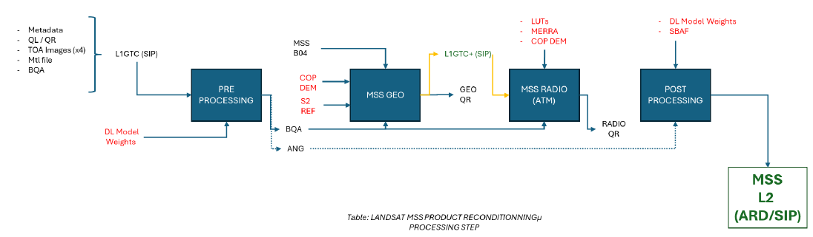
MSS Processing overview#
1. MSS Geometric Correction#
The status is that the geometric accuracy of delivered Landsat MSS ESA/SLAP products is not sufficient to reach CEOS ARD compliancy at threshold level, because their multi temporal registration accuracy is not sub-pixel. The bad precision of the geolocation is a major contributor to uncertainty loss, It prevents to reach 0.5 pixel RMSE multi temporal accuracy.
The current ESA-MSS geo-processing is correct and include state of art geometric calibration algorithm (bundle block adjustment).
The objective is to apply a poly-harmonic splines geometric transformation model to MSS data to account for local deformation. Also, a way forward might be to correct for local geometric distortions by using Radial Basis Functions (RBF) as proposed in (RD-6, RD-7). The poly-harmonic splines are a linear combination of RBFs plus a 2nd degree polynomial term :
{kind=link}
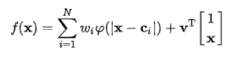
Where :
N represents the total number of cells
Ci the cell center coordinate
Wi the weighting factor to be estimated
The model is applied for co-registration of MSS L1C data to a common reference map.
The model is calibrated by using reference GCP set (control point) defined for every cell (ci)
Cells are selected into input images, the number / dimension of cells play an important role in the final result.
The following chart summarizes the RBF chain :
{kind=link}
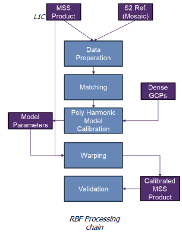
Data Preparation: clipping over the same geo extent
Matching: Collect Dense GCPs by using KARIOS applied on image twin (MSS Image, S2 image)
Poly Harmonic Model Calibration: process GCPs grid, select GCPs relevant for calibration, and apply least square.
Warping: transform input MSS image with polyharmonic model and generate output MSS Geo re-calibrated product
Validation: use KARIOS, to check co-registration between S2 reference and output image.
2. Example results#
These plots show the difference between the KARIOS results before and after the correction, against a S2 reference image, for products located in South of France, Greenland and Poland :
2.1 South of France#
{kind=link}
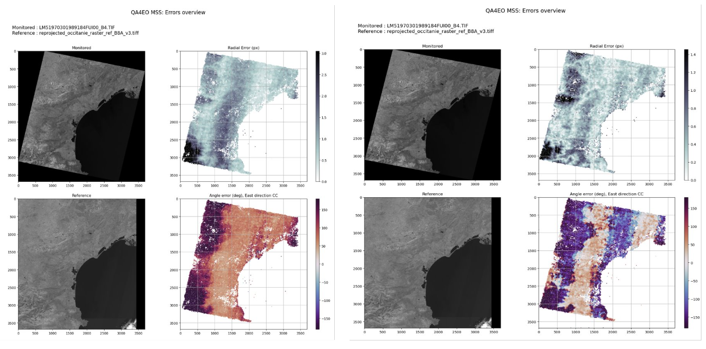
Geometric errors overview - Landsat MSS / S2 (South of France)#
{kind=link}
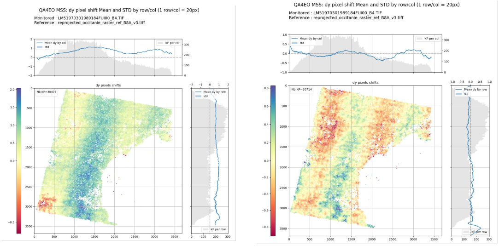
DY pixel shift (mean/STD) - Landsat MSS / S2 (South of France)#
{kind=link}
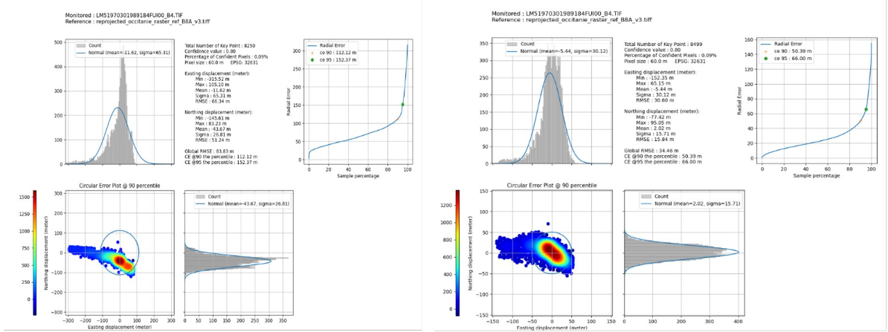
Geometric errors distribution - Landsat MSS / S2 (South of France)#
{kind=link}
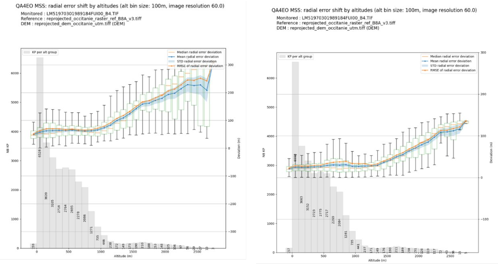
Radial error shift by altitude distribution - Landsat MSS / S2 (South of France)#
2.2 Greenland#
{kind=link}
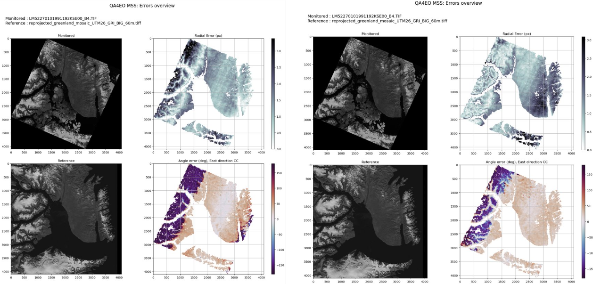
Geometric errors overview - Landsat MSS / S2 (Greenland)#
{kind=link}
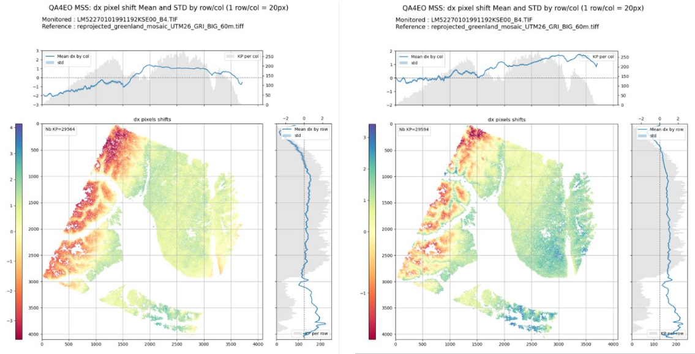
DY pixel shift (mean/STD) - Landsat MSS / S2 (Greenland)#
{kind=link}
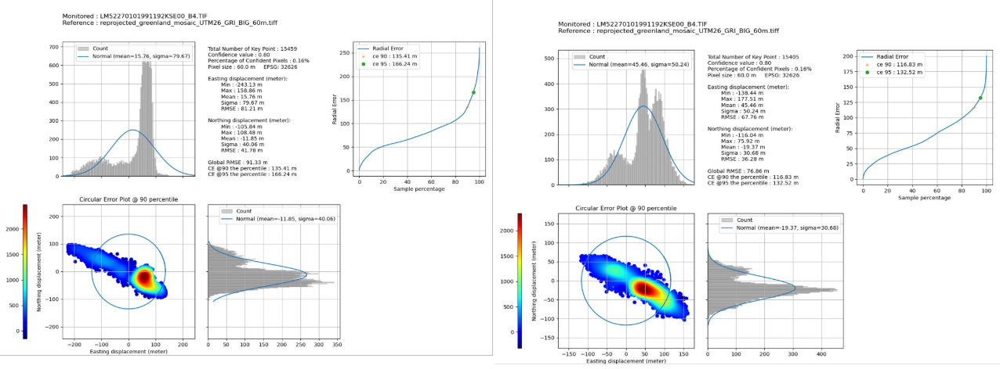
Geometric errors distribution - Landsat MSS / S2 (Greenland)#
{kind=link}
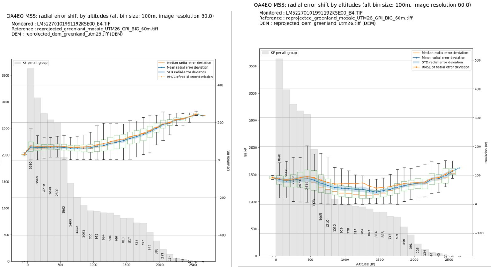
Radial error shift by altitude distribution - Landsat MSS / S2 (Greenland)#
2.3 Poland#
{kind=link}
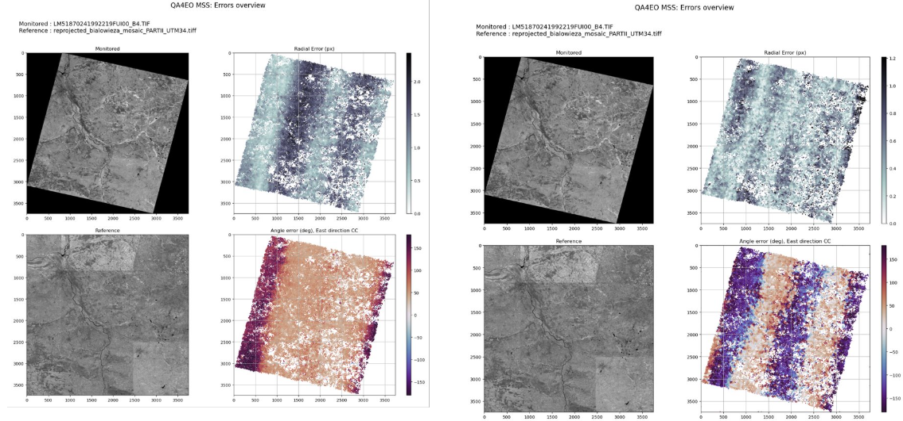
Geometric errors overview - Landsat MSS / S2 (Poland)#
{kind=link}
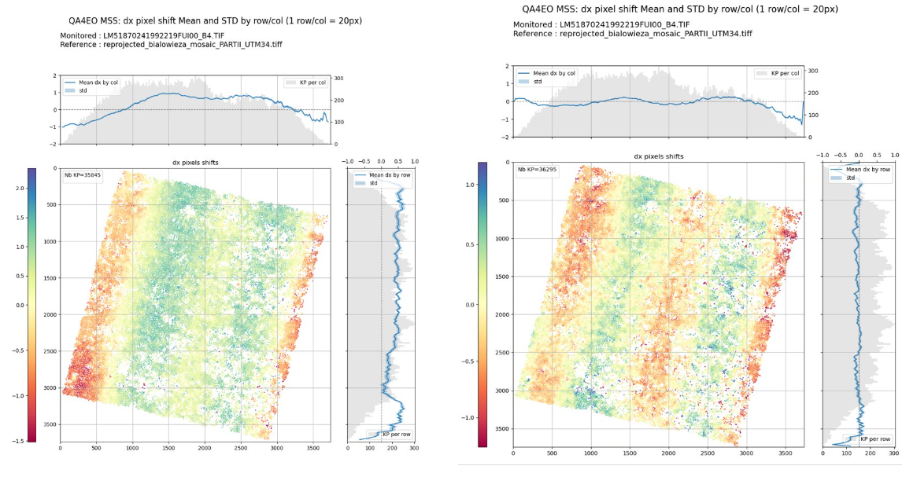
DY pixel shift (mean/STD) - Landsat MSS / S2 (Poland)#
{kind=link}
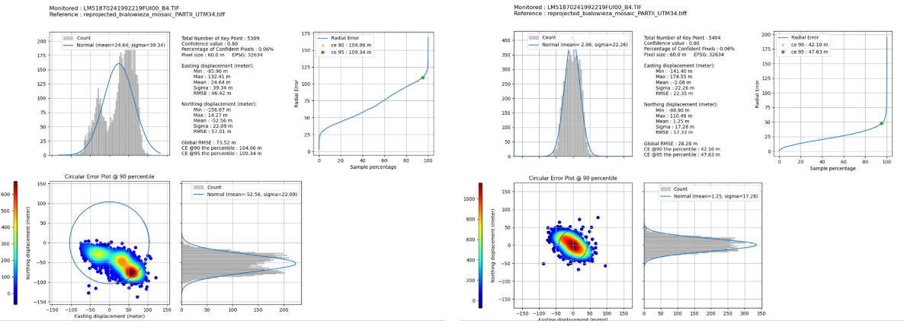
Geometric errors distribution - Landsat MSS / S2 (Poland)#
{kind=link}
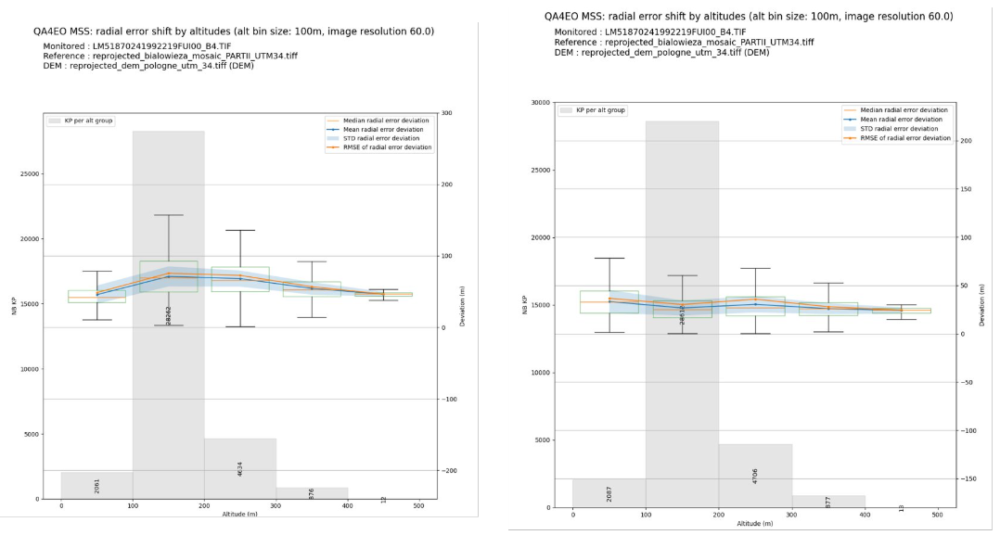
Radial error shift by altitude distribution - Landsat MSS / S2 (Poland)#
3. Global results#
These plots show the circular error results for all tested products (about 100 products per site) before and after correction :
3.1 South of France#
{kind=link}
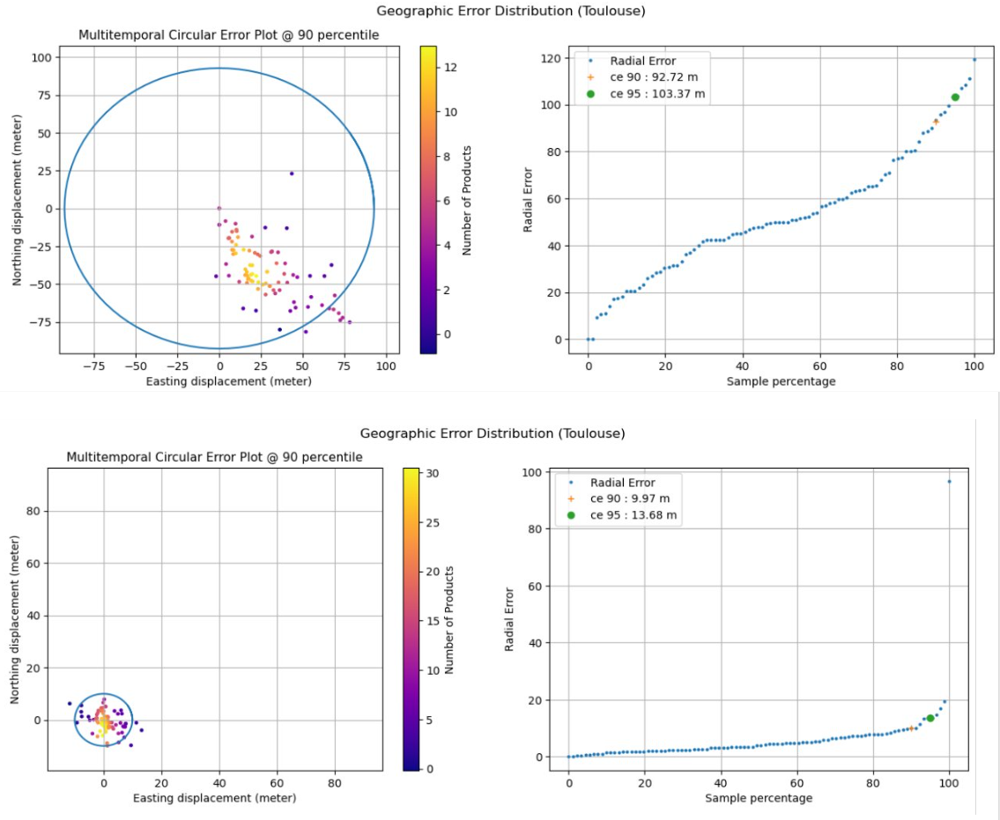
Circular error plot - All products - Landsat MSS / S2 (South of France)#
3.2 Greenland#
{kind=link}
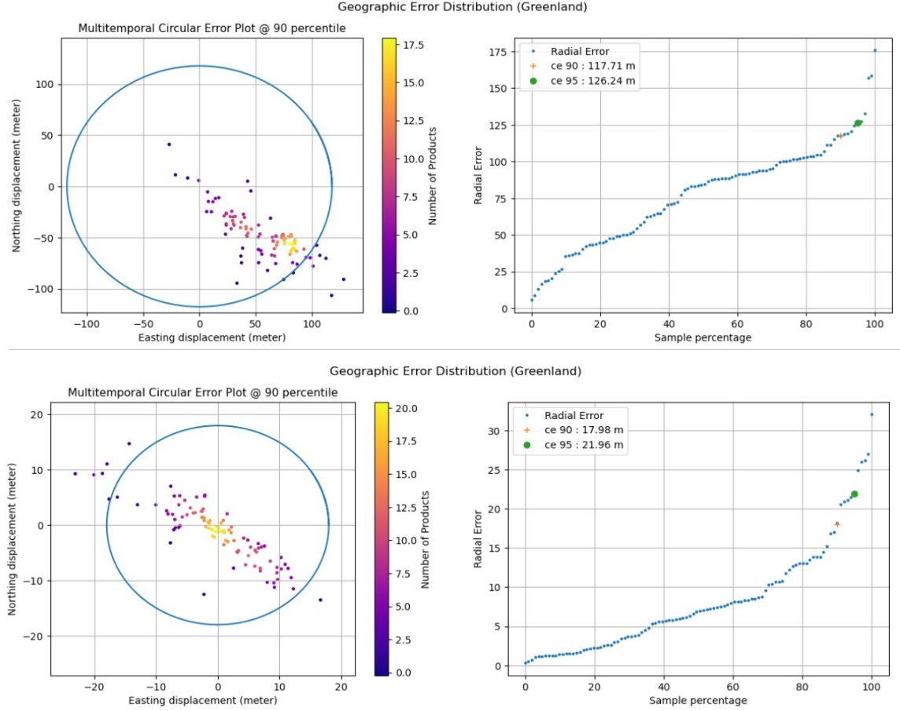
Circular error plot - All products - Landsat MSS / S2 (Greenland)#
3.3 Poland#
{kind=link}
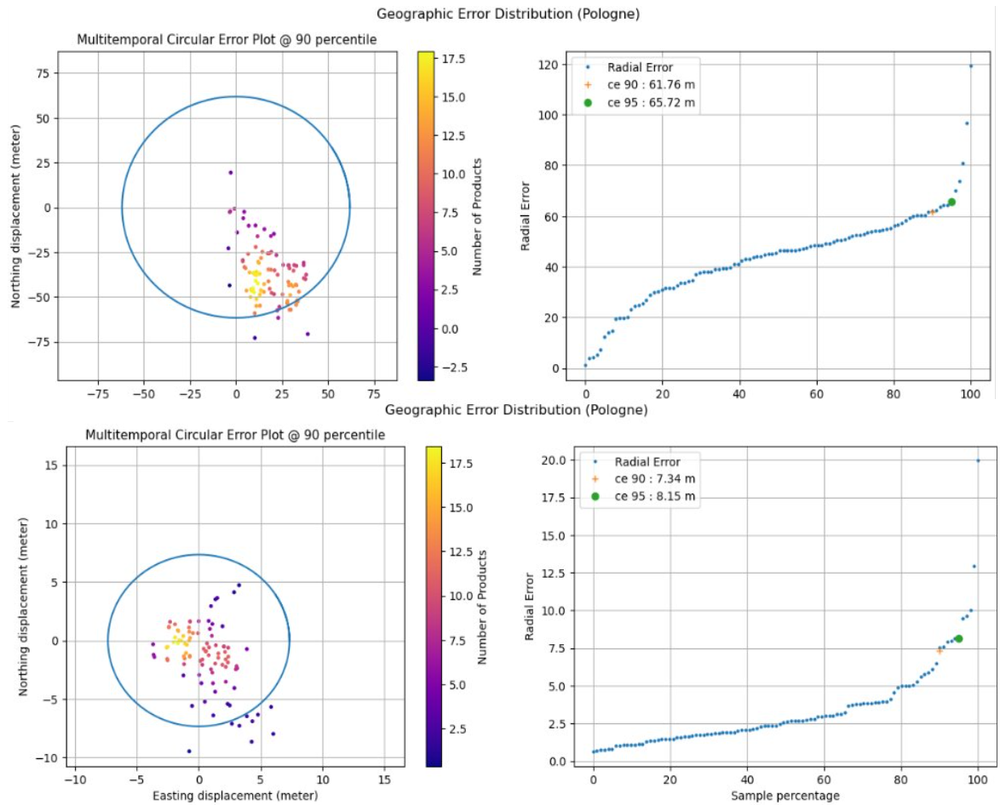
Circular error plot - All products - Landsat MSS / S2 (Poland)#
Warning
The scale is different in the before/after plots.
Conclusion#
The results show a significant improvement in the global RMSE, in particular in the south of France and Poland dataset. For Greenland, the improvement is more limited as the mountainous terrain and the high ice coverage hinders the possibility to have a good KARIOS matching. Many parameters have been studied (number of cells, etc) with most of them being KARIOS parameters, which plays a key role in the geometric process.
Note
You can cite KARIOS Tool by using Saunier, S., Canonicy, P., Louis, J., Debaecker, V., & Albinet, C. (2024). KARIOS : A fast & efficient open source tool for geometric deformation analysis (1.0). The Very High-resolution Radar & Optical Data Assessment (2023) Workshop (VH RODA), ESA-ESRIN, Frascati (Italy)
Many thanks to Telespazio for this open source tool.